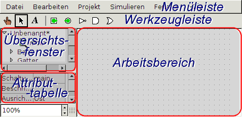

In diesem Abschnitt wird Ihnen gezeigt, wie Sie mit den zwei Hauptregionen des Programmfensters von Logisim arbeiten können: dem Übersichtsfenster und der Attribut-Tabelle.

Das Übersichtsfenster
Die Attribut-Tabelle
Werkzeug- und Bauelementattribute
Weiter: Das Übersichtsfenster.